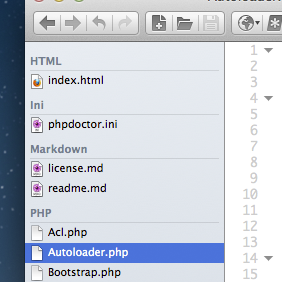

Open Files
The Open Files widget does exactly as the name implies - it lists the files that you currently have opened. It also sorts them by name and groups them by language. Additionally your files will be split into 2 different sections when split view is active.
Switching to Files
To switch to any of your open files simply click on them in the Open Files widget.
Closing Files
When hovering over an open files in the Open Files list a close icon ("X") will appear at the right of the item. Click this to close the file.
Additionally you can close the file by right clicking on the list item, or by pressing the relevant keybinding (Editor: Close Current Buffer).
File Actions
Upon right clicking a file in the Open Files list you will receive the same context menu as when right clicking a tab, allowing you to perform actions upon the relevant file.
Key Bindings
Open Files adds the following 2 key bindings:
- User Interface: Focus on Open Files Pane
- User Interface: Show/Hide Open Files Pane
To use these key bindings, define them under Preferences > Editor > Key Bindings. For more info refer to the Key Binding documentation.
Hiding the Tab Bar
As Open Files allows you to switch between your files similarly to the tab bar you may want to disable the tab bar. To do this simply press View > View Editor Tabs.